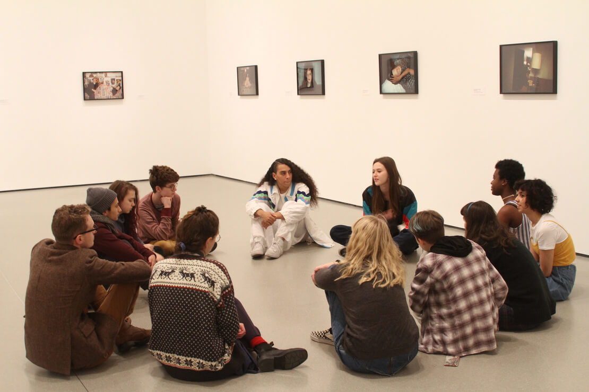

Tickets
Buy tickets
Join
Become a member
MoMa
Visit
Plan your visit
Exhibitions
Exhibitions/events
Exhibitions and events
Art
Art and artists
Store
Buy tickets
Locations, hours,
and admission
Tips for visiting
Restaurants
Discounts
Accessibility
Families
Groups
Events
Exhibitions
Film series
Performance
programs
Exhibition history
The Collection
Artists
Audio
Art terms
Shop online
Store locations
About us
Support
Research and learning
Blog
Buy tickets
Become a member
The Museum of Modern Art
Open today, 10:30 a.m.–9:00 p.m.
11 West 53 Street, Manhattan
Please enter at 18 West 54 Street
Open until 9:00 p.m. Fridays and Saturdays, through December 30
MoMA PS1
Open today, 12:00–6:00 p.m.
22-25 Jackson Avenue, Queens
Plan your
visit
Events
Quiet Mornings
Wednesday, December 6, 7:30–9:00 a.m.
The Museum of Modern Art / Lecture/panel

Open Art Space: A Free Drop-In Program
for LGBTQ Teens and Their Allies
Thursday, December 7, 4:30–6:30 p.m.
The Museum of Modern Art / Workshop, for teens
Store
Shop new Bluesmart
Save $25 on gifts
MoMA would like to thank
our multi-year partners.